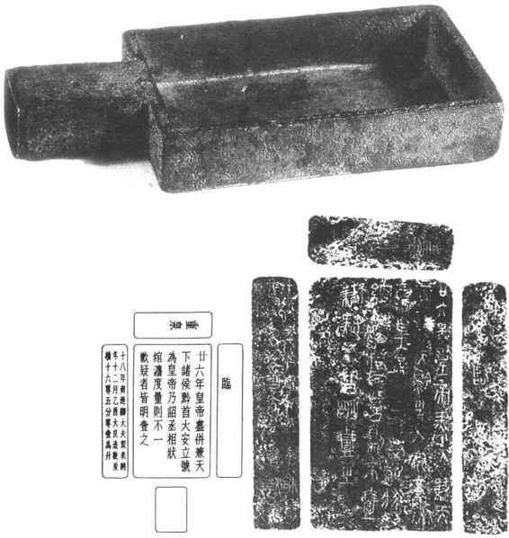
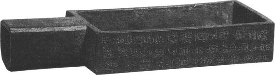
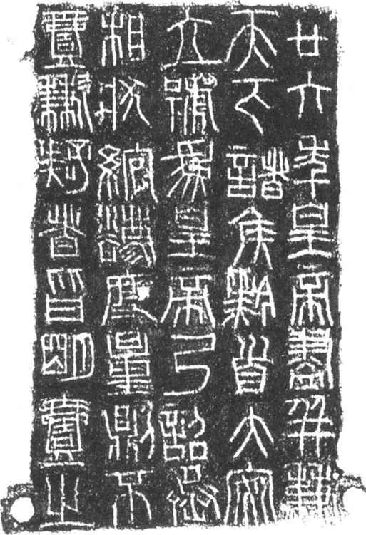
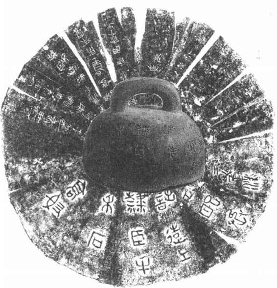
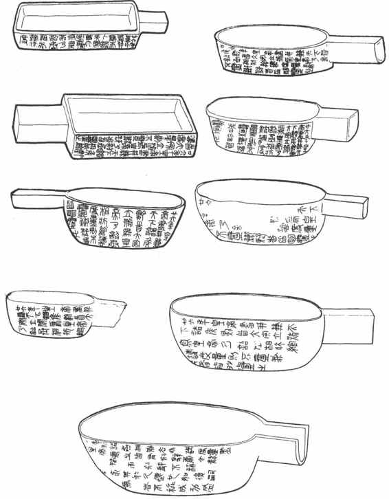

第四节
从商鞅方升到秦始皇统一度量衡
战国时期，由于社会经济的发展，新旧势力之间进行着激烈的斗争，各国纷纷实行变法革新。在各国之间激烈的兼并战争中，变法最彻底、最成功的是秦国。经过几代人的努力，至秦王赢政时，国力强盛，最后统一了中国。
一、商鞅变法与商鞅铜方升
商鞅于公元前361年从卫国来到秦国，立志要辅助秦孝公变法，振兴秦国。他提出废井田“开阡陌封疆”。把旧制100步为亩，改为240步为亩，扩大了耕地面积，有利于农业发展。在田亩有了统一标准的前提下又提出要统一赋税。设“治粟内史”专收农业税，设“少府”主要征收人口税、手工业税和商业税。又制定了各级官吏的俸禄。要实现以上的改革，都必须建立在统一度量衡基础之上。收藏在上海博物馆的“商鞅方升”便是商鞅在秦国推行统一度量衡的珍贵历史文物。（图16—9）方升三面及底部都刻有铭文。左侧铭文大意是：秦孝公十八年（前344），齐国派卿大夫数人出使秦国，共同商议包括统一两国度量衡等事宜。为纪念这一重大事件，在当年的12月，商鞅督造了度量衡标准器——铜方升。明确规定一升的容积是16.2立方寸。今实测方升：深1寸，宽3寸；长5.4寸。计算容积正合16.2立方寸，约200毫升。［44］商鞅方升是目前所见，最早“以度审容”的实物。方升的设计、制造精确，刻铭翔实。无论从度量衡技术，还是从历史意义上都是正经补史的珍品。商鞅统一度量衡对于推动秦国的改革，巩固新兴地主阶级的政权，都发挥了积极的作用，并为后来秦始皇统一全国度量衡奠定了基础。

图16-9 商鞅铜方升铭文及释文
二、秦始皇统一度量衡的历史功绩
公元前221年，秦始皇统一中国，结束了历时五百多年的诸侯割据、战乱频仍的动乱局面。为了巩固统一的政权，秦始皇采取了一系列重大措施来加强地主阶级的专政。他自称是全国最高统治者，立尊号为“皇帝”，实行郡县为基础的中央集权制，设“三公”、“九卿”等各级官吏，并按不同等级统一发放俸禄。为了维护封建秩序，在秦国原有法律基础上制定了一套更严密、更完善的法律条文。
1976年在湖北云梦睡虎地出土了一批秦律竹简，其中许多条文都必须以度量衡来保证实施。如《田律》规定按受田之数缴纳赋税；《仓律》规定出入仓廪的粮食必须严格称重后记账；《金布律》对绢帛的幅宽、匹长有严格的尺度要求；《工律》对官营手工业生产的各种产品要求规范化、标准化等等。［45］以上各项法律条文都必须建立在统一的度量衡基础之上。因此，秦始皇统一了全国之后，立即下令统一度量衡。
1．颁发统一的命令
秦王赢政统一全国后，自称为“始皇帝”。皇帝所下的命令为“诏”。统一度量衡的命令就是以诏书的形式发布的。诏书全文共40字：“廿六年，皇帝尽并兼天下诸侯，黔首大安，立号为皇帝。乃诏丞相状、绾，法度量则不壹歉疑者，皆明壹之。”大意是：秦王在他继位的第26年，平定了各诸侯国，统一了天下。百姓得以安居乐业。立皇帝称号。下诏书给丞相槐状、王绾，制定统一度量衡的法令，把混乱和不统一的度量衡都统一起来。近年来刻有秦始皇诏书的各种权衡器和量器在原各诸侯国故地都曾出土。（图16—10、图16—11）《商君书》曰：“权制断于君则威。”［46］颁布了统一度量衡的命令，有力地保证了这项措施的顺利推行和坚决贯彻。

图16-10 秦方升

图16-11 秦统一度量衡诏版
2．延续秦国故有的度量衡制度
秦始皇统一度量衡，是以商鞅统一秦国度量衡制度为基础，并推广至全国。以商鞅方升为例，方升除有制造时刻的铭文外，传至秦始皇已时隔一百多年，仍以它为标准器，故在底部加刻始皇统一度量衡诏书。此外，1964年在西安市郊秦阿房宫遗址出土了一件铜权。权上铸、刻有各个时期的铭文：正面阳文，是铸造时原有的，内容包括管理、主造和制造者人名，以及“高奴”、“禾石”等。（图16—12）说明是高奴地区用来称粮草的120斤权。高奴禾石铜权上的刻铭，反映出在商鞅统一秦国度量衡之后，已建立了一套严格的管理制度。至秦始皇统一全国，即将秦国原有的标准器皆重新检定、校测。此权也加刻了统一度量衡诏书。秦二世即位，对此权再次检测后，加刻二世诏书于一侧。二世诏书大意是：强调统一度量衡是始皇帝的功绩，并令后代将统一的法令继续推行下去。从这些器物上证实了秦自商鞅至秦二世，统一度量衡的一切法规、制度均未改变，对度量衡器的检测也从未间断。这些都是秦始皇能在短期内顺利统一全国度量衡有力的技术保证。

图16-12 高奴禾石铜权
3．制造和颁发大量度量衡器
迄今已搜集到秦代度量衡器百余件，几乎每一件都以铸、刻或镶嵌诏版等各种形式把40字诏书复现在器物上。出土地区包括了秦统一前各诸侯国的领地。有力地证明了秦始皇在统一后短短的十几年内已把统一的政令推行至全国各地。所见秦权量值包括石（120斤）、钧（30斤）、24斤、16斤、9斤、8斤、5斤、1斤和半两。经实测每斤重约250克，每件秦权量值皆以倍数递增，据考证皆属等臂天平上作砝码用。大型砝码是征收粮食和草料的称重器。
量器分陶质、铜质两种。铜质量器多呈广口。椭圆形，量值皆为“斗”的分数倍，如二分之一斗；三分之一斗；四分之一斗等。经研究，它们与分配服劳役者每日口粮有关。据《墨子》记载：秦汉之际，士卒每人、每餐定量分为五等，即半食，食二分之一斗；三食，三分之一斗；四食，四分之一斗。［47］这些量器正是当时分配制度最有力的实物证据。（图16—13）今国家博物馆所藏秦始皇铜方升，无论器形、容积皆与商鞅铜方升相似。大于一升的各种铜量，则多为椭圆形。实测秦量折合每升容量也在200毫升左右。

图16-13 秦铜量线图
近年在山东出土了数件秦陶量，其特点是40字诏书预先烧制成10个印戳，分别打在陶量的泥坯上，然后烧制而成。这种用戳式印拼成一篇完整文书的形式，开创了活字印刷术的先河。（图16—14）

图16-14 秦始皇诏陶量及铭文拓本
4．实行严格的检定制度
为了保证“器械一量”，秦时还制定了严格的检定制度。秦律竹简《工律》、《效律》、《内史杂》等律令中都可以看到相关的法律条文。其中《效律》是检验官府物资、财富的法律，因此对度量衡器具的准确度给予了必要的重视。律令中对被检测的度量衡器具的允许误差范围、超出允差标准后的惩罚制度都作了十分具体的规定：衡器中凡“石”不准确，误差在16两以上，罚该官府啬夫盔甲一副；不满16两，在8两以上，罚盾牌一副。60斤权，误差在8两以上；30斤权，误差在4两以上；斤权，误差在3铢以上，皆各罚盾牌一副。量器中凡桶（斛，10斗）不准确，误差在2升以上，罚盔甲一副；不满2升而在1升以上，罚盾牌一副；斗量，误差在半升以上；升量，误差在一龠以上，各罚盾牌一副。称黄金的小型天平、砝码不准确，误差在半铢以上，罚盾牌一副等等。［48］经实测，所见秦权、秦量，单位量值都比较准确，大部分误差未超过《效律》所允许的范围。其实际量值是：一尺约23.1厘米；一升约200毫升；一斤约250克。这一单位量值从商鞅到东汉，几乎延用了四五百年，其中东汉末，尺度略有增长，约为24厘米，重量略有减轻，约为220克。
“秦律”还对度量衡的使用、管理作了规定，《工律》“县及工室听官为正。衡石羸（累）、斗、用（桶）、升，毋过岁壶（壹）。有工者勿为正。叚（假）试即正”［49］。律令大意是，政府部门及官营手工作坊使用的度量衡器，皆由官府指定的部门每年校正一次。本身有检测工匠者，则不必代为校正。领用时需加校正。《内史杂》中还规定：官仓内必须配备齐全各种度量衡器，暂时不用的也需要定期校正备用。如果丢失度量衡器，要与丢失文书、符券、官印一样受到惩罚。［50］
《吕氏春秋》中也多处记载了检测、校定度量衡器的时间和范围。“仲春之月，日夜分，则同度量，均衡石、角斗桶，正权概。”“仲秋之月，日夜分，则一度量，平权衡，正钧石，齐斗甬。”［51］为了保证检测的准确，已注意到选择在气温、湿度适中的春、秋两季进行。说明当时已萌发了科学的管理思想和方法。
秦始皇统一度量衡，不仅促进了度量衡的发展，也为封建社会度量衡制度奠定了基础。